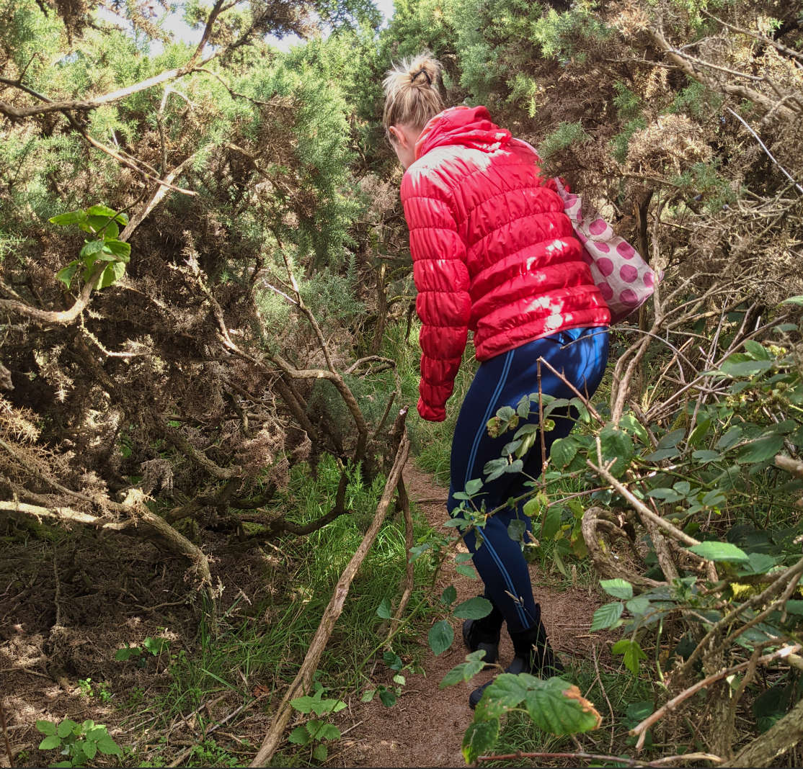
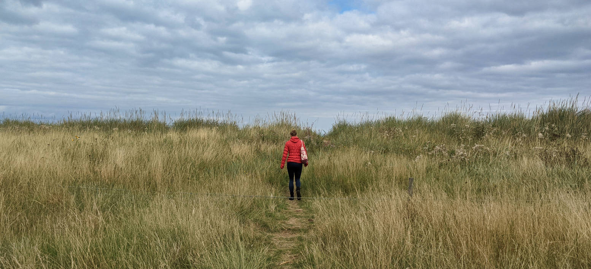
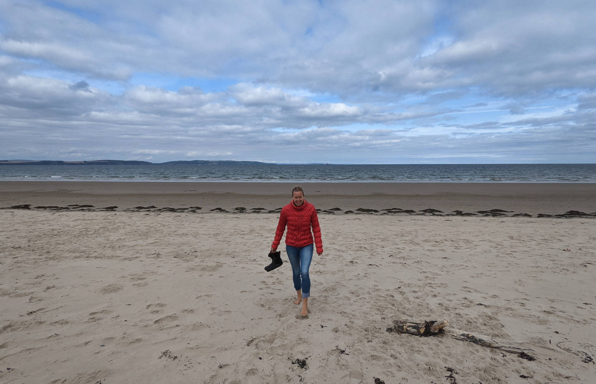

Somewhere in Scotland, not too far from our place, is a beach called secret beach. Ssshhh.. Don’t tell anyone.. (though google maps knows about it so perhaps not THAT secret). We were on a mission to go for a swim somewhere, so about time we paid a visit to this mysterious secret beach.

The little trail (that forked off from a more normal trail) to the beach was well fitted to the name of the beach. Small, winey, bordered by all kinds of nasty prickly plants, such as stinging nettles, gorse and brumbles, it was not one to tackle in shorts and one to make you reconsider your plans. Do you really want to go further through this jungle? Yes please, unexpected jungle tracking sessions are always welcome, the more adventure the better.
 We made it to the beach, put on our wetsuits and went for a very nice but already cold swim. The warm water days seem to be behind us, but hey, who’s complaining? Sunny afternoon, little wind, sand between your toes (after swimming that is, since we heard about the weever fish, a poisonous fish that you may step on, we try to always swim with neoprene kayak shoes on our feet) and a wonderful world all around.
